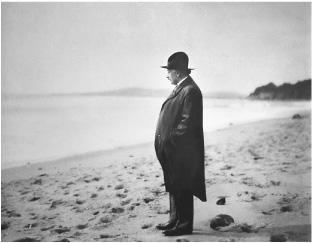

Santa Barbara beach, 1933
在圣芭芭拉海滨，1933年
One evening in Berlin, Einstein and his wife were at a dinner party when a guest expressed a belief in astrology. Einstein ridiculed the notion as pure superstition. Another guest stepped in and similarly disparaged religion. Belief in God, he insisted, was likewise a superstition.
爱因斯坦和妻子在柏林出席一次晚宴时，曾经听到一位客人表达自己对占星术的信仰。爱因斯坦嘲笑这纯粹是迷信。又有一位客人插话，以类似的方式贬损宗教。他坚称，对上帝的信仰同样是一种迷信。
At this point the host tried to silence him by invoking the fact that even Einstein harbored religious beliefs.
这时，主人称爱因斯坦也有宗教信仰，试图使这位客人的心情平复下来。
“It isn’t possible!” the skeptical guest said, turning to Einstein to ask if he was, in fact, religious.
“那不可能！”这位客人将信将疑，并问爱因斯坦是否真有宗教信仰。
“Yes, you can call it that,” Einstein replied calmly. “Try and penetrate with our limited means the secrets of nature and you will find that, behind all the discernible laws and connections, there remains something subtle, intangible and inexplicable. Veneration for this force beyond anything that we can comprehend is my religion. To that extent I am, in fact, religious.”1
“的确，你可以这样说，”爱因斯坦平静地回答，“尝试用我们有限的手段探寻自然的奥秘，你将会发现，在所有可以认识的规律和联系背后，存在着某种微妙的、无形的、莫名的东西。对这种超越了可理解事物的力量的敬畏就是我的宗教。在这个意义上，我的确是有宗教信仰的。”
As a child, Einstein had gone through an ecstatic religious phase, then rebelled against it. For the next three decades, he tended not to pronounce much on the topic. But around the time he turned 50, he began to articulate more clearly—in various essays, interviews, and letters—his deepening appreciation of his Jewish heritage and, somewhat separately, his belief in God, albeit a rather impersonal, deistic concept of God.
爱因斯坦小时候曾经历过一个狂热的宗教阶段，但后来摆脱了出来。在接下来的30年里，他不再对此话题发表过多看法。但是到了50岁时，他又开始在各种文章、采访和书信中更加明确地评价他的犹太血统以及对上帝的信仰，尽管这是一个非人格的、泛神论的上帝概念。
There were probably many reasons for this, in addition to the natural propensity toward reflections about the eternal that can occur at age 50. The kinship he felt with fellow Jews due to their continued oppression reawakened some of his religious sentiments. But mainly, his beliefs seemed to arise from the sense of awe and transcendent order that he discovered through his scientific work.
当然，人到了50岁时，可能天然就趋向对永恒进行反思，但除此之外或许还有别的原因。犹太同胞受到的压迫使爱因斯坦感到了与他们的血脉联系，这重新唤起了他的某些宗教情感。不过，他的信仰似乎主要源于他的敬畏感以及通过科学工作而发现的某种超验秩序。
Whether embracing the beauty of his gravitational field equations or rejecting the uncertainty in quantum mechanics, he displayed a profound faith in the orderliness of the universe. This served as a basis for his scientific outlook—and also his religious outlook. “The highest satisfaction of a scientific person,” he wrote in 1929, is to come to the realization “that God Himself could not have arranged these connections any other way than that which does exist, any more than it would have been in His power to make four a prime number.”2
无论是拥护美妙的引力场方程还是拒斥量子力学中的不确定性，他都表现出了对宇宙秩序的深刻信念。这是他的科学观和宗教观的基础。他在1929年写到，“一个科学工作者最高程度的满足”就是认识到“上帝本身只能以现有方式安排各种联系，就像他无法把4创造成素数一样”。
For Einstein, as for most people, a belief in something larger than himself became a defining sentiment. It produced in him an admixture of confidence and humility that was leavened by a sweet simplicity. Given his proclivity toward being self-centered, these were welcome graces. Along with his humor and self-awareness, they helped him to avoid the pretense and pomposity that could have afflicted the most famous mind in the world.
和大多数人一样，对爱因斯坦来说，对某种超越性事物的信仰是一种至关重要的情感。这种情感在他心中同时唤起了信心和谦卑，并为一种令人愉悦的单纯质朴所裹挟。鉴于他倾向于以自我为中心，这些品质无异于上天的眷顾。加之他的幽默和自知之明，他得以避免世界上大多数名人都会沾染的虚伪和自负。
His religious feelings of awe and humility also informed his sense of social justice. It impelled him to cringe at trappings of hierarchy or class distinction, to eschew excess consumption and materialism, and to dedicate himself to efforts on behalf of refugees and the oppressed.
敬畏和谦卑的宗教情感还赋予了他社会正义感。这使他厌恶高贵的身份和阶级区分，远离穷奢极欲，愿意为难民和受压迫者尽自己的力量。
Shortly after his fiftieth birthday, Einstein gave a remarkable interview in which he was more revealing than he had ever been about his religious thinking. It was with a pompous but ingratiating poet and propagandist named George Sylvester Viereck, who had been born in Germany, moved to America as a child, and then spent his life writing gaudily erotic poetry, interviewing great men, and expressing his complex love for his fatherland.
在50岁生日之后不久，爱因斯坦接受了一次不平凡的采访，其间透露了他更多的宗教思想。采访者名叫格奥尔格·西尔维斯特·菲尔埃克，是一位自命不凡但会讨人欢心的诗人和宣传家。他生在德国，小时候搬到了美国，后来写一些庸俗华丽的艳情诗，采访一些名人，不断表达他对祖国怀有的复杂的爱；
Having bagged interviews with people ranging from Freud to Hitler to the kaiser, which he would eventually publish as a book called Glimpses of the Great, he was able to secure an appointment to talk to Einstein in his Berlin apartment. There Elsa served raspberry juice and fruit salad; then the two men went up to Einstein’s hermitage study. For reasons not quite clear, Einstein assumed Viereck was Jewish. In fact, Viereck proudly traced his lineage to the family of the kaiser, and he would later become a Nazi sympathizer who was jailed in America during World War II for being a German propagandist.3
菲尔埃克设法对弗洛伊德、希特勒、德皇等人进行了采访，并出版了一本名为《伟人一瞥》（Glimpses of the Greaf）的书。后来他又成功地在爱因斯坦柏林的寓所对他进行了采访。爱尔莎准备了树莓汁和水果沙拉。接着菲尔埃克和爱因斯坦来到僻静的书房。不知为什么，爱因斯坦总以为菲尔埃克是犹太人。事实上，菲尔埃克自豪地与德皇攀上了亲，后来成为纳粹的同情者，第二次世界大战期间因为宣传德国而在美国坐了牢。
Viereck began by asking Einstein whether he considered himself a German or a Jew. “It’s possible to be both,” replied Einstein. “Nationalism is an infantile disease, the measles of mankind.”
菲尔埃克一上来就问爱因斯坦认为自己是德国人还是犹太人。“也许两者都是，”爱因斯坦回答说，“民族主义是人类的一种幼稚病，一种痼疾。”
Should Jews try to assimilate? “We Jews have been too eager to sacrifice our idiosyncrasies in order to conform.”
犹太人应当试图同化吗？“我们犹太人一直过于渴望牺牲我们的特质来顺从别人了。”
To what extent are you influenced by Christianity? “As a child I received instruction both in the Bible and in the Talmud. I am a Jew, but I am enthralled by the luminous figure of the Nazarene.”
您在多大程度上受基督教影响？“我小时候受过《圣经》和《塔木德》的教育。我是犹太人，但耶稣这一光辉形象很让我着迷。”
You accept the historical existence of Jesus? “Unquestionably! No one can read the Gospels without feeling the actual presence of Jesus. His personality pulsates in every word. No myth is filled with such life.”
您认为耶稣确有其人吗？“毫无疑问！任何人读福音书都会感受到耶稣的真实存在。他的人格跃动在字里行间。神话中找不到这种生活。”
Do you believe in God? “I’m not an atheist. The problem involved is too vast for our limited minds. We are in the position of a little child entering a huge library filled with books in many languages. The child knows someone must have written those books. It does not know how. It does not understand the languages in which they are written. The child dimly suspects a mysterious order in the arrangement of the books but doesn’t know what it is. That, it seems to me, is the attitude of even the most intelligent human being toward God. We see the universe marvelously arranged and obeying certain laws but only dimly understand these laws.”
您信仰上帝吗？“我不是一个无神论者。对我们有限的心灵来说，这里涉及的问题太大了。我们就像一个小孩子进入了一个巨大的图书馆，里面藏有用多种语言写成的书籍。这个孩子知道一定有人写过这些书，但不知道是如何写成的，也不懂得写作所使用的语言。他隐约怀疑有一种神秘的秩序掌控着这些书，但不知道它是什么。在我看来，即使最有思想的人对待上帝也无非是这种态度。我们看到宇宙秩序井然，遵从着某些定律，但我们只是模模糊糊地理解这些定律。”
Is this a Jewish concept of God? “I am a determinist. I do not believe in free will. Jews believe in free will. They believe that man shapes his own life. I reject that doctrine. In that respect I am not a Jew.”
这是一种犹太人的上帝概念吗？“我是一个决定论者，并不相信自由意志。犹太人相信自由意志，他们认为人可以塑造自己的生活，而我并不这样认为。在这个意义上，我并不是犹太人。”
Is this Spinoza’s God? “I am fascinated by Spinoza’s pantheism, but I admire even more his contribution to modern thought because he is the first philosopher to deal with the soul and body as one, and not two separate things.”
这是斯宾诺莎的上帝吗？“我对斯宾诺莎的泛神论很着迷，但我更欣赏他对近代思想的贡献，因为作为哲学家，他第一次将心与物看成一体，而不是两种不相干的东西。”
How did he get his ideas? “I’m enough of an artist to draw freely on my imagination. Imagination is more important than knowledge. Knowledge is limited. Imagination encircles the world.”
您是如何得到您的思想的？“我实在是一个艺术家，可以自由地利用我的想象。想象比知识更重要。知识是有限的，想象则可以包含世界。”
Do you believe in immortality? “No. And one life is enough for me.”4
您相信不朽么？“不。一次生命对我已经足矣。”
Einstein tried to express these feelings clearly, both for himself and all of those who wanted a simple answer from him about his faith. So in the summer of 1930, amid his sailing and ruminations in Caputh, he composed a credo, “What I Believe.” It concluded with an explanation of what he meant when he called himself religious:
爱因斯坦试图清晰地表达这些感受，不仅是为自己，也是为所有那些希望他能就自己的信仰简单作答的人。于是1930年夏天，在卡普特航行沉思期间，他创作了一篇信仰告白——《我的信仰》，结尾解释了他为何自称有宗教信仰：
The most beautiful emotion we can experience is the mysterious. It is the fundamental emotion that stands at the cradle of all true art and science. He to whom this emotion is a stranger, who can no longer wonder and stand rapt in awe, is as good as dead, a snuffed-out candle. To sense that behind anything that can be experienced there is something that our minds cannot grasp, whose beauty and sublimity reaches us only indirectly: this is religiousness. In this sense, and in this sense only, I am a devoutly religious man.5
我们所能体验到的最美好感情是神秘的感情。它是一切真正艺术和真正科学发端处的基本感情。谁要是体验不到它，谁要是不再有好奇心，也不再有敬畏的感觉，他就无异于行尸走肉，一支熄灭的蜡烛。认识到在可经验事物背后存在着某种我们的心灵所不能把握的东西，其美和崇高只能间接地为我们感受到，这才是真正的宗教感情。在这个意义上，而且也只是在这个意义上，我才是一个笃信宗教的人。
People found it evocative, even inspiring, and it was reprinted repeatedly in a variety of translations. But not surprisingly, it did not satisfy those who wanted a simple, direct answer to the question of whether he believed in God. As a result, getting Einstein to answer that question concisely replaced the earlier frenzy of trying to get him to give a one-sentence explanation of relativity.
人们觉得这些文字很有见地，发人深省。它不断被重印，各种译本层出不穷。不过，这并不能满足那些想要他就是否信仰上帝给出直截了当回答的人。结果，让爱因斯坦简明扼要地回答那个问题，取代了较早前要他用一句话解释相对论。
A Colorado banker wrote that he had already gotten responses from twenty-four Nobel Prize winners to the question of whether they believed in God, and he asked Einstein to reply as well. “I cannot conceive of a personal God who would directly influence the actions of individuals or would sit in judgment on creatures of his own creation,” Einstein scribbled on the letter. “My religiosity consists of a humble admiration of the infinitely superior spirit that reveals itself in the little that we can comprehend about the knowable world. That deeply emotional conviction of the presence of a superior reasoning power, which is revealed in the incomprehensible universe, forms my idea of God.”6
一位科罗拉多的银行家写到，他已经从位诺贝尔奖获得者那里得到了他们对是否信仰上帝的回答。他也问爱因斯坦这个问题。“我不能设想这样一个人格化的上帝，他竟会直接干预人的活动，或是对自己的造物进行评判，”爱因斯坦在信中说，“我们只能把握到可知世界的一鳞半爪，对其中显露出来的至高精神进行谦卑的赞美，这就是我的宗教感情。在感情上深信，在无法理解的宇宙中存在着一种至高的理性力量，便是我的上帝观念。”
A little girl in the sixth grade of a Sunday school in New York posed the question in a slightly different form. “Do scientists pray?” she asked. Einstein took her seriously. “Scientific research is based on the idea that everything that takes place is determined by laws of nature, and this holds for the actions of people,” he explained. “For this reason, a scientist will hardly be inclined to believe that events could be influenced by a prayer, i.e. by a wish addressed to a supernatural Being.”
纽约一所主日学校的一位六年级小女孩以稍微不同的形式提出了这个问题。“科学家们祈祷吗？”她问道。爱因斯坦认真做了回复。“科学研究的思想基础是，任何事物的发生都是由自然规律决定的，人的活动也是如此，”他解释说，“因此科学家很难相信，祈祷者或者向一个超自然的主宰提出的愿望可以影响事件的发生。”
That did not mean, however, there was no Almighty, no spirit larger than ourselves. As he went on to explain to the young girl:
然而，这并不意味着没有上帝，没有比我们强大的精神。他继续对这个小女孩解释道：
Every one who is seriously involved in the pursuit of science becomes convinced that a spirit is manifest in the laws of the Universe—a spirit vastly superior to that of man, and one in the face of which we with our modest powers must feel humble. In this way the pursuit of science leads to a religious feeling of a special sort, which is indeed quite different from the religiosity of someone more naïve.7
任何严肃追求科学的人都会越来越确信，有一种精神呈现于宇宙定律之中。这种精神远远超越了人的精神。面对它，力量有限的我们必定会感到谦卑。于是，对科学的追求会导向一种特殊的宗教感情，它着实不同于某些更加幼稚的人的宗教感情。
For some, only a clear belief in a personal God who controls our daily lives qualified as a satisfactory answer, and Einstein’s ideas about an impersonal cosmic spirit, as well as his theories of relativity, deserved to be labeled for what they were. “I very seriously doubt that Einstein himself really knows what he is driving at,” Boston’s Cardinal William Henry O’Connell said. But one thing seemed clear. It was godless. “The outcome of this doubt and befogged speculation about time and space is a cloak beneath which hides the ghastly apparition of atheism.”8
在有些人看来，只有明确地表明自己信仰一个能够支配我们曰常生活的人格化的上帝，才称得上是令人满意的回答。爱因斯坦关于非人格化上帝的思想以及他的相对论是名副其实的。“我非常怀疑爱因斯坦本人是否真的知道他的意思。”波士顿的红衣主教威廉·亨利·欧康奈尔说。但有一点似乎是清楚的，那就是无神论。“这种怀疑的结果以及令人困惑的时空思辨只是一个幌子，在它下面隐藏着无神论的可怖幽灵。”
This public blast from a cardinal prompted the noted Orthodox Jewish leader in New York, Rabbi Herbert S. Goldstein, to send a very direct telegram: “Do you believe in God? Stop. Answer paid. 50 words.” Einstein used only about half his allotted number of words. It became the most famous version of an answer he gave often: “I believe in Spinoza’s God, who reveals himself in the lawful harmony of all that exists, but not in a God who concerns himself with the fate and the doings of mankind.”9
在这位红衣主教的冲击下，纽约著名的正统派犹太领袖戈德斯坦拉比给爱因斯坦发去了一封非常直接的电报：“您信仰上帝吗？句号。回复资费已付。五十字。”爱因斯坦用规定字数的一半做了回复。这也是他给出的各种回答里最著名的版本：“我信仰斯宾诺莎的那个在事物的和谐有序中显示出来的上帝，而不信仰那个同人类的命运和行为有牵连的上帝。”
Einstein’s response was not comforting to everyone. Some religious Jews, for example, noted that Spinoza had been excommunicated from the Jewish community of Amsterdam for holding these beliefs, and he had also been condemned by the Catholic Church for good measure. “Cardinal O’Connell would have done well had he not attacked the Einstein theory,” said one Bronx rabbi. “Einstein would have done better had he not proclaimed his nonbelief in a God who is concerned with fates and actions of individuals. Both have handed down dicta outside their jurisdiction.”10
爱因斯坦的回答并不能服众。例如，一些虔诚的犹太人指出，斯宾诺莎曾因持这些信仰而被逐出阿姆斯特丹犹太集体，还遭到过天主教廷的谴责。“要是欧康奈尔主教没有攻击爱因斯坦的理论就好了，”布朗克斯（Bronx）的一位拉比说，“要是爱因斯坦没有宣称不信仰一个与人的命运和行为有牵连的上帝，就更好了。两人都在自己的权限之外做了断言。”
Nevertheless, most people were satisfied, whether they fully agreed or not, because they could appreciate what he was saying. The idea of an impersonal God, whose hand is reflected in the glory of creation but who does not meddle in daily existence, is part of a respectable tradition in both Europe and America. It is to be found in some of Einstein’s favorite philosophers, and it generally accords with the religious beliefs of many of America’s founders, such as Jefferson and Franklin.
然而，不论是否完全赞同，大多数人是满意的，因为他们欣赏爱因斯坦所说的话。一个在创造的荣耀之中反映出来而不介入曰常事务的非人格化上帝的思想，在欧洲和美洲都隶属于一种可敬的传统。它也可以在爱因斯坦最喜欢的一些哲学家那里找到，而且总体上符合托马斯·杰斐逊、本杰明·富兰克林等美国缔造者的宗教信仰。
Some religious believers dismiss Einstein’s frequent invocations of God as a mere figure of speech. So do some nonbelievers. There were many phrases he used, some of them playful, ranging from der Herrgott (the Lord God) to der Alte (the Old One). But it was not Einstein’s style to speak disingenuously in order to appear to conform. In fact, just the opposite. So we should do him the honor of taking him at his word when he insists, repeatedly, that these oft-used phrases were not merely a semantic way of disguising that he was actually an atheist.
有些人将爱因斯坦频繁地援引上帝斥为仅仅是一种修辞。这其中，信仰者和非信仰者兼而有之。他还用过许多说法，其中一些很幽默，比如“上帝先生”（der Herrgott）或“老头子”（der Alte）。但爱因斯坦不会为了顺从而违心地说话，事实恰恰相反。因此，当他一再强调，这些常用说法并不是为了掩饰他实际上是无神论者时，我们应当相信他说的话。
Throughout his life, he was consistent in deflecting the charge that he was an atheist. “There are people who say there is no God,” he told a friend. “But what makes me really angry is that they quote me for support of such views.”11
爱因斯坦终生都坚决反对别人说他是无神论者。“有些人说上帝不存在，”他对朋友说，“但真正令我感到气愤的是，他们竟然用我的说法来支持这样的观点。”
Unlike Sigmund Freud or Bertrand Russell or George Bernard Shaw, Einstein never felt the urge to denigrate those who believe in God; instead, he tended to denigrate atheists. “What separates me from most so-called atheists is a feeling of utter humility toward the unattainable secrets of the harmony of the cosmos,” he explained.12
与弗洛伊德、罗素和萧伯纳不同，爱因斯坦从未感到有必要去诋毁那些信仰上帝的人，而是倾向于贬损无神论者。“宇宙和谐的秘密无法获得，由此产生的绝对谦卑感将我与大多数所谓的无神论者区分开来。”他解释说。
In fact, Einstein tended to be more critical of the debunkers, who seemed to lack humility or a sense of awe, than of the faithful. “The fanatical atheists,” he explained in a letter, “are like slaves who are still feeling the weight of their chains which they have thrown off after hard struggle. They are creatures who—in their grudge against traditional religion as the ‘opium of the masses’—cannot hear the music of the spheres.”13
事实上，相比于信仰者，爱因斯坦更倾向于批判清除信仰的人，他们似乎更加缺少谦卑或敬畏。他在一封信中写道：“狂热的无神论者就像一些奴隶，在一番艰苦斗争之后，他们已经摆脱了枷锁，却仍然感受到它的压迫。由于抱怨传统宗教是‘人民的鸦片’，他们无法听到天籁。”
Einstein would later engage in an exchange on this topic with a U.S. Navy ensign he had never met. Was it true, the sailor asked, that Einstein had been converted by a Jesuit priest into believing in God? That was absurd, Einstein replied. He went on to say that he considered the belief in a God who was a fatherlike figure to be the result of “childish analogies.” Would Einstein permit him, the sailor asked, to quote his reply in his debates against his more religious shipmates? Einstein warned him not to oversimplify. “You may call me an agnostic, but I do not share the crusading spirit of the professional atheist whose fervor is mostly due to a painful act of liberation from the fetters of religious indoctrination received in youth,” he explained. “I prefer the attitude of humility corresponding to the weakness of our intellectual understanding of nature and of our own being.”14
后来，爱因斯坦曾就此话题与一位从未谋面的美国海军少尉通过信。这位海员问爱因斯坦是否真的在耶稣会神父的引领之下信了上帝。爱因斯坦回答说，那很荒谬，并认为信仰一个父亲式的上帝乃是源于一种“幼稚的类比”。这位海员又问爱因斯坦，能否用他刚才的回答来反驳那些更有宗教信仰的船员。爱因斯坦警告他不要过分简化。“你也许可以称我为不可知论者，但我并不赞同那种职业无神论者的十字军精神，其热情大都来自年轻时从宗教灌输的桎梏中解脱出来的痛苦经历，”他解释说，“我倾向于对理解自然和我们自身方面的弱点保持谦卑态度。”
How did this religious instinct relate to his science? For Einstein, the beauty of his faith was that it informed and inspired, rather than conflicted with, his scientific work. “The cosmic religious feeling,” he said, “is the strongest and noblest motive for scientific research.”15
这种宗教本能如何与他的科学相关联？爱因斯坦的信仰赋予了他的科学工作以形式和灵感，而不是与之相冲突。他说：“这种宇宙宗教感情是科学研究最强烈、最高贵的动机。”
Einstein later explained his view of the relationship between science and religion at a conference on that topic at the Union Theological Seminary in New York. The realm of science, he said, was to ascertain what was the case, but not evaluate human thoughts and actions about what should be the case. Religion had the reverse mandate. Yet the endeavors worked together at times. “Science can be created only by those who are thoroughly imbued with the aspiration toward truth and understanding,” he said. “This source of feeling, however, springs from the sphere of religion.”
爱因斯坦后来在纽约协和神学院的一次会议上谈了他对科学与宗教关系的看法。他说，科学只能断言“是什么”，而不能断言与“应当是什么”有关的人的思想和行动；宗教则有相反的职权范围。然而两者有时可以相辅相成。“科学只能由那些全心全意追求真理和向往理解事物的人来创造，”他说，“然而这种感情的源泉却来自宗教领域。”
The talk got front-page news coverage, and his pithy conclusion became famous: “The situation may be expressed by an image: science without religion is lame, religion without science is blind.”
这篇谈话上了新闻头版，他言简意赅的结论也变得众人皆知。“这种情况也许可以通过一个比喻来表达：没有宗教的科学就像跛子，没有科学的宗教就像瞎子。”
But there was one religious concept, Einstein went on to say, that science could not accept: a deity who could meddle at whim in the events of his creation or in the lives of his creatures. “The main source of the present-day conflicts between the spheres of religion and of science lies in this concept of a personal God,” he argued. Scientists aim to uncover the immutable laws that govern reality, and in doing so they must reject the notion that divine will, or for that matter human will, plays a role that would violate this cosmic causality.16
爱因斯坦继续说，但有一种宗教观念是科学所不能接受的，那就是一个可以随意介入他所创造的事件或造物生活的神。“当今宗教领域与科学领域之间冲突的主要来源在于人格化的上帝这一概念。”他说。科学家旨在发现支配实在的永恒定律，在此过程中他们必须否认神的意志或人的意志会破坏这种宇宙因果性。
This belief in causal determinism, which was inherent in Einstein’s scientific outlook, conflicted not only with the concept of a personal God. It was also, at least in Einstein’s mind, incompatible with human free will. Although he was a deeply moral man, his belief in strict determinism made it difficult for him to accept the idea of moral choice and individual responsibility that is at the heart of most ethical systems.
这种内在于爱因斯坦科学观的对因果决定论的信仰不仅与人格化的上帝概念相冲突，而且与人的自由意志也不相容，至少在爱因斯坦心目中是这样。尽管他怀有深深的道德关切，但他对严格决定论的信仰使他很难接受处于大多数伦理体系核心的道德选择和个体责任的观念。
Jewish as well as Christian theologians have generally believed that people have this free will and are responsible for their actions. They are even free to choose, as happens in the Bible, to defy God’s commands, despite the fact that this seems to conflict with a belief that God is all-knowing and all-powerful.
犹太教神学家和基督教神学家一般都认为，人有这种自由意志，要对其行为负责。就像《圣经》中所讲的那样，人甚至可以自由选择不去遵从上帝的命令，尽管这似乎与上帝全知全能的信念相悖。
Einstein, on the other hand, believed, as did Spinoza,17 that a person’s actions were just as determined as that of a billiard ball, planet, or star. “Human beings in their thinking, feeling and acting are not free but are as causally bound as the stars in their motions,” Einstein declared in a statement to a Spinoza Society in 1932.18
而另一方面，就像斯宾诺莎那样， 爱因斯坦又相信人的行动如同弹子球、行星或恒星的运动一样确定。“人在思想、感情和行动方面是不自由的，而是像星体运动那样受制于因果性。”爱因斯坦1932年在给一个斯宾诺莎协会的声明中宣称。
Human actions are determined, beyond their control, by both physical and psychological laws, he believed. It was a concept he drew also from his reading of Schopenhauer, to whom he attributed, in his 1930 “What I Believe” credo, a maxim along those lines:
他相信，人的行动同时受制于物理定律和心理定律，这一思想也是得自于叔本华的著作。在1930年的《我的世界观》中，他将一条格言归之于叔本华：
I do not at all believe in free will in the philosophical sense. Everybody acts not only under external compulsion but also in accordance with inner necessity. Schopenhauer’s saying, “A man can do as he wills, but not will as he wills,”19 has been a real inspiration to me since my youth; it has been a continual consolation in the face of life’s hardships, my own and others’, and an unfailing wellspring of tolerance.20
我完全不相信人类会有那种在哲学意义上的自由。每一个人的行为，不仅受着外界的强迫，而且还要适应内心的必然。叔本华说过：“人可以依其意愿而行，但不能随心所欲。”（A man can do as he wills,but not will as he wills.） 从我青年时代起，这句话对我就是真正的启示：在自己和他人生活面临困难的时候，它总是给我以安慰，并且永远是宽容的源泉。
Do you believe, Einstein was once asked, that humans are free agents? “No, I am a determinist,” he replied. “Everything is determined, the beginning as well as the end, by forces over which we have no control. It is determined for the insect as well as for the star. Human beings, vegetables, or cosmic dust, we all dance to a mysterious tune, intoned in the distance by an invisible player.”21
曾经有人问爱因斯坦是否相信人是自由的行动者？“不，我是决定论者，”他回答说，“无论是开端还是结束，一切都被我们所不能控制的力量决定着。无论是昆虫还是星体均如此。远方一个看不见的乐手奏出一支神秘的曲调，人、植物或宇宙尘埃都在和着这一曲调翩翩起舞。”
This attitude appalled some friends, such as Max Born, who thought it completely undermined the foundations of human morality. “I cannot understand how you can combine an entirely mechanistic universe with the freedom of the ethical individual,” he wrote Einstein. “To me a deterministic world is quite abhorrent. Maybe you are right, and the world is that way, as you say. But at the moment it does not really look like it in physics—and even less so in the rest of the world.”
这种态度让玻恩等朋友感到惊骇，玻恩认为它完全破坏了人类的道德基础。“我不明白你如何能将一个全然机械论的宇宙与伦理上的个人自由结合起来，”他给爱因斯坦写信说，“在我看来，一个决定论的世界相当令人厌恶。也许你是对的，正如你所说，世界就是如此。但在目前，物理学中似乎并不是这样——在世界的其余部分就更不是这样。”
For Born, quantum uncertainty provided an escape from this dilemma. Like some philosophers of the time, he latched on to the indeterminacy that was inherent in quantum mechanics to resolve “the discrepancy between ethical freedom and strict natural laws.”22 Einstein conceded that quantum mechanics called into question strict determinism, but he told Born he still believed in it, both in the realm of personal actions and physics.
在玻恩看来，量子不确定性为这一困境提供了出路。和当时的一些哲学家一样，他诉诸量子力学内在的不确定性来解决“伦理自由与严格的自然律之间的矛盾”。
Born explained the issue to his high-strung wife, Hedwig, who was always eager to debate Einstein. She told Einstein that, like him, she was “unable to believe in a ‘dice-playing’ God.” In other words, unlike her husband, she rejected quantum mechanics’ view that the universe was based on uncertainties and probabilities. But, she added, “nor am I able to imagine that you believe—as Max has told me—that your ‘complete rule of law’ means that everything is predetermined, for example whether I am going to have my child inoculated.”23 It would mean, she pointed out, the end of all ethics.
玻恩向自己容易激动的妻子海德维希解释这个问题，后者一直希望与爱因斯坦进行争论。她对爱因斯坦说，她也“无法相信一个‘掷骰子’的上帝”。换句话说，与丈夫不同，她也不赞同量子力学的观点，即宇宙基于不确定性和概率。但她又说：“我也不能想象你会相信（就像马克斯告诉我的）你的‘完备律则’意味着一切都是预先决定的，比如我是否会让我的孩子打预防针。” 她指出，那将意味着一切伦理的终结。
In Einstein’s philosophy, the way to resolve this issue was to look upon free will as something that was useful, indeed necessary, for a civilized society, because it caused people to take responsibility for their own actions. Acting as if people were responsible for their actions would, psychologically and practically, prompt them to act in a more responsible manner. “I am compelled to act as if free will existed,” he explained, “because if I wish to live in a civilized society I must act responsibly.” He could even hold people responsible for their good or evil, since that was both a pragmatic and sensible approach to life, while still believing intellectually that everyone’s actions were predetermined. “I know that philosophically a murderer is not responsible for his crime,” he said, “but I prefer not to take tea with him.”24
在爱因斯坦的哲学中，这个问题的出路在于将自由意志看成某种对文明社会有用甚至是必要的东西，因为它将要求人们对自己的行为负责。假想为自己的行为负责将在心理和实践上促使人们以一种更负责任的方式行动。“我不得不这样去行动，就好像自由意志存在一样，”他解释说，“因为倘若我希望生活在一个文明社会中，我就必须负责地行动。”他甚至可以既主张人们对其善行或恶行负责（因为那是一种既实用又明智的生活方式），同时又在理智上相信每个人的行为都是被预先决定的。“我知道从哲学上讲，一个杀人犯对他的罪行是没有责任的，”他说，“但我宁愿不与他一起喝茶。”
In defense of Einstein, as well as of both Max and Hedwig Born, it should be noted that philosophers through the ages have struggled, sometimes awkwardly and not very successfully, to reconcile free will with determinism and an all-knowing God. Whether Einstein was more or less adept than others at grappling with this knot, there is one salient fact about him that should be noted: he was able to develop, and to practice, a strong personal morality, at least toward humanity in general if not always toward members of his family, that was not hampered by all these irresolvable philosophical speculations. “The most important human endeavor is the striving for morality in our actions,” he wrote a Brooklyn minister. “Our inner balance and even our existence depend on it. Only morality in our actions can give beauty and dignity to life.”25
在为爱因斯坦、玻恩或海德维希辩护时，应当指出的是，哲学家们一直试图将自由意志与决定论即全知的上帝调和起来，虽然有时做法很笨拙，而且并不很成功。姑且不论爱因斯坦是否比别人更擅长解决这个问题，有这样一个事实需要我们注意：他能够发展和实践一种强烈的个人道德（即使并不总是针对他的家庭成员，也至少是对整个人类），而没有被所有这些不可解决的哲学思辨所阻碍。“人最重要的职责就是在我们的行动中争取道德，”他写信给布鲁克林的一位教长说，“我们内心的平衡乃至我们的生存都依赖于它。只有我们行动中的道德才能赋予生活以美和尊严。”
The foundation of that morality, he believed, was rising above the “merely personal” to live in a way that benefited humanity. There were times when he could be callous to those closest to him, which shows that, like the rest of us humans, he had flaws. Yet more than most people, he dedicated himself honestly and sometimes courageously to actions that he felt transcended selfish desires in order to encourage human progress and the preservation of individual freedoms. He was generally kind, good-natured, gentle, and unpretentious. When he and Elsa left for Japan in 1922, he offered her daughters some advice on how to lead a moral life. “Use for yourself little,” he said, “but give to others much.”26
爱因斯坦认为，那种道德的基础超越了“纯个人的事情”，且有益于人性。有时他可能会对自己最亲近的人表现冷淡，这说明他和我们所有人一样也有缺点。但他要比大多数人更为诚实和勇敢地投身于他认为超越了自私欲望的行动，以促进人类进步，维护个人自由。一般说来，他温厚善良，和蔼友善，不矫揉造作。他和爱尔莎1922年赴日本访问时，曾经这样建议她的两个女儿如何过一种道德的生活：“少留己用，多予他人。”